Dedicated to my mother Louise (Lisa), an
admirer of Michelangelo's masterpieces
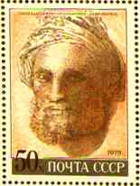 |
Michelangelo Buonarotti (1475-1564). Italian Renaissance sculptor, painter, architect, and poet who exerted an unparalleled influence on the development of Western art. The Sixtine Chapel in Vatican is his story of Creation. |
 |
Michelangelo was recalled to Rome by Pope Julius II in 1505 for two commissions. The most important one was for the frescoes of the Sistine Chapel ceiling, which occupied him from 1508 to 1512. Tip: Please point on the stamps with the mouse in order to get more information.
 |
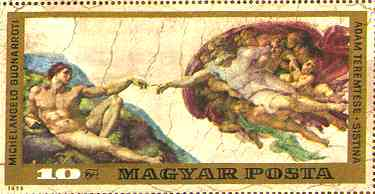 |
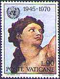 |
Lying on his back on scaffolding high above the chapel floor, Michelangelo painted some of the finest images of all time. On the vault of the papal chapel, he devised an intricate system of decoration that included nine scenes from the Book of Genesis, beginning with God Separating Light from Darkness and including the Creation of Adam, the Creation of Eve, the Temptation and Fall of Adam and Eve, and the Flood.
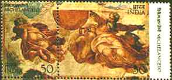 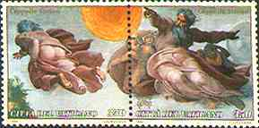 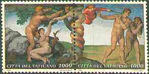 |
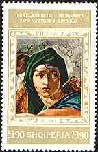 |
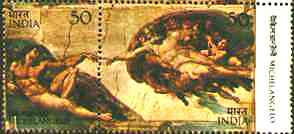 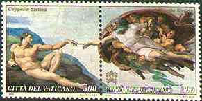 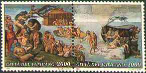 |
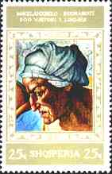 |
These centrally located narratives are surrounded by alternating images of prophets and sibyls on marble thrones, by other Old Testament subjects, and by the ancestors of Christ. In order to prepare for this enormous work, Michelangelo drew numerous figure studies and cartoons, devising scores of figure types and poses.
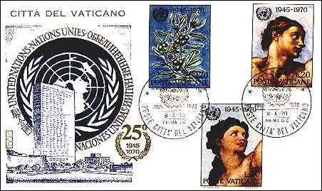 |
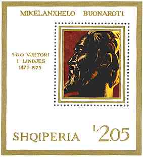 |
These awesome, mighty images, demonstrating Michelangelo's masterly
understanding of human anatomy and movement, changed the course of painting in the West.
(After: Microsoft Encarta 1996)
Notice: Some stamps above, in yellow tints, reproduce the work before it was restaurated.
Related link:
Michelangelo, WebMuseum
Background: Madonna of the Stairs, the first sculpture of Michelangelo.
|
Click the banner to visit the site |
|